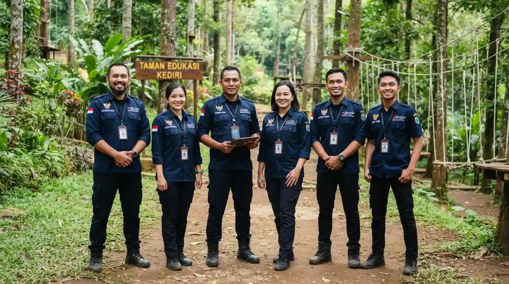
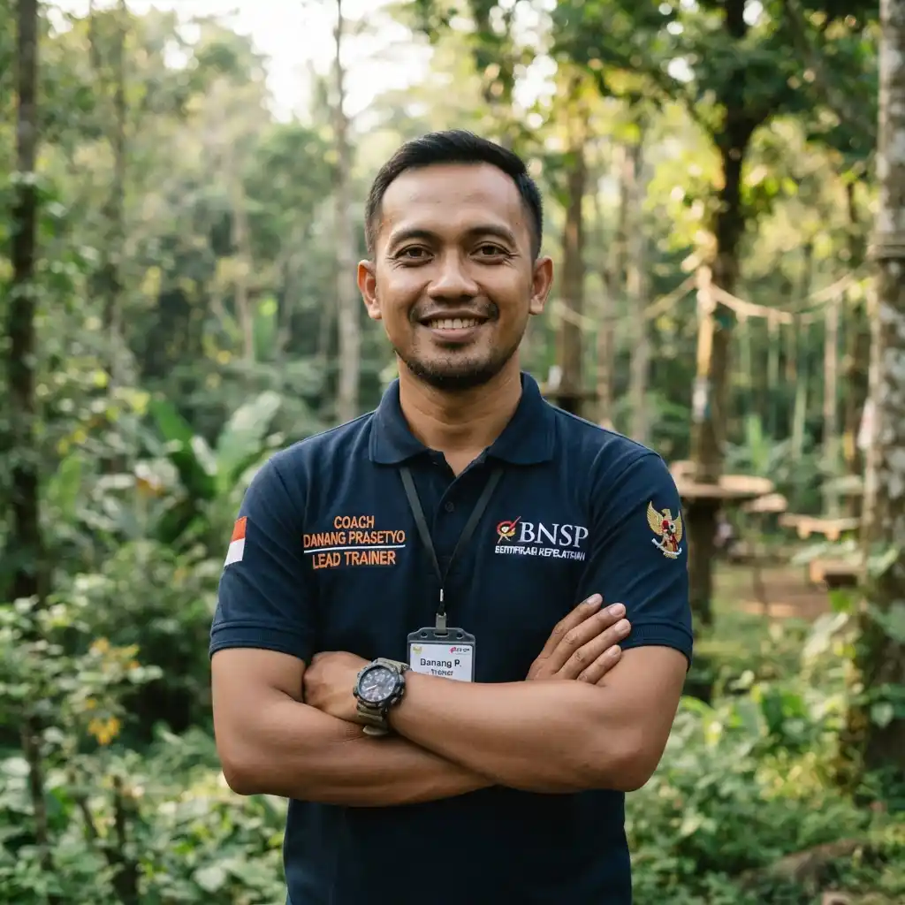
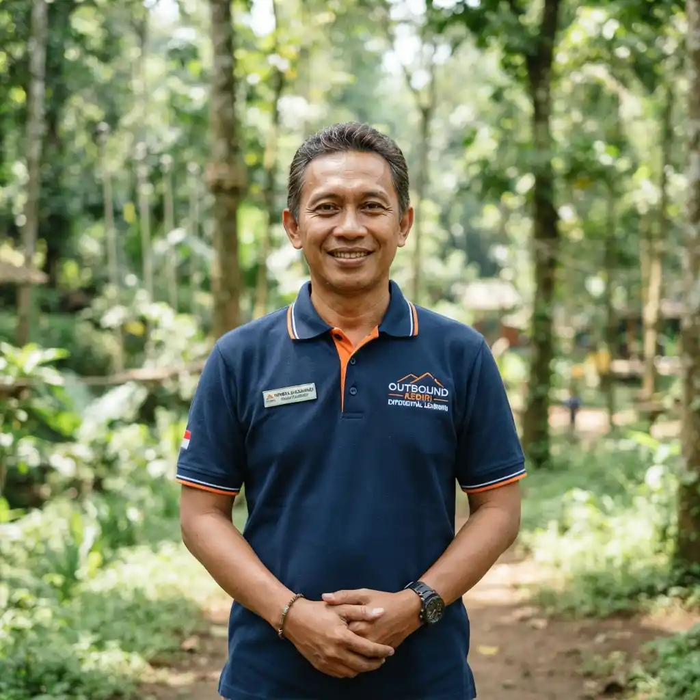
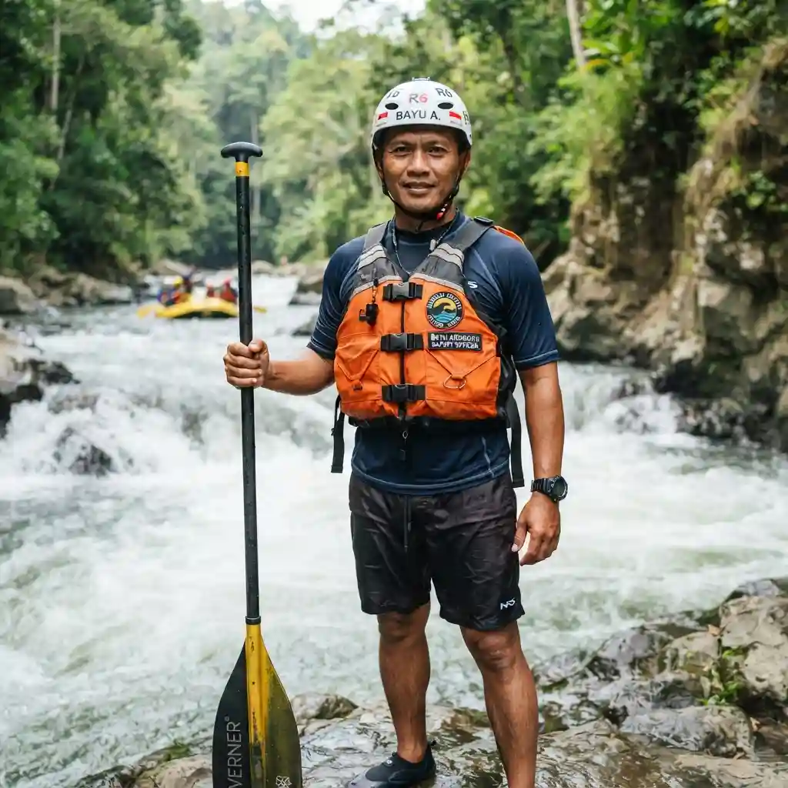
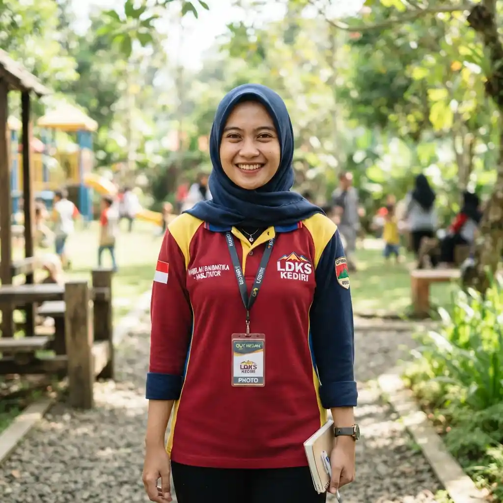

Membangun Sinergi Melalui Petualangan Seru di Kediri
Bukan sekadar games kumpul-kumpul biasa. Kami adalah provider outbound Kediri profesional berlisensi BNSP & AELI yang memadukan psikologi terapan, dinamika kelompok modern, dan keindahan alam lereng Gunung Wilis untuk mentransformasi tim instansi, korporasi, sekolah, dan keluarga Anda.

Visi, Misi & Metode Kerja Kami
Kami memandu setiap program dengan kerangka akademis experiential learning yang menghasilkan dampak terukur bagi individu dan organisasi.
Visi Kami
Menjadi pusat rujukan utama pelatihan petualangan & pengembangan SDM di Jawa Timur yang menjunjung integritas, keselamatan, dan dampak transformatif.
Misi Pelayanan
- Program terukur & bebas perpeloncoan
- Standar keselamatan internasional
- Pemberdayaan pariwisata lokal Wilis
Filosofi Kerja
Bukan sekadar tawa, tapi insight mendalam (debriefing terarah) yang aplikatif untuk tempat kerja, sekolah, dan keluarga.
4 Pilar Sertifikasi Instruktur & Peralatan
Standar operasional ketat menjamin keamanan peserta dari instansi pemerintahan, korporasi skala besar, hingga rombongan anak sekolah.
BNSP RI
Seluruh trainer memegang skema Fasilitator Utama & Madya Experiential Learning tersumpah.
AELI Nasional
Anggota resmi teregistrasi aktif Pengda Jawa Timur yang patuh kode etik pemandu nasional.
FAJI & UIAA
Skipper rafting bersertifikat FAJI & standar sertifikasi internasional untuk instalasi tali tinggi.
First Responder K3
Petugas P3K lapangan bersertifikat K3 Outdoor siap di lokasi dengan jalur rujukan cepat RSUD.
Dewan Trainer & Fasilitator Utama
Didampingi oleh praktisi berpengalaman bertahun-tahun di bidang psikologi industri, manajemen risiko alam bebas, dan pedagogi outdoor.

Coach Danang Prasetyo
M.Psi., C.ELT · Lead Trainer & Psikolog Organisasi- Master Trainer BNSP RI
- Asesor AELI Jawa Timur
- Konsultan Psikologi HRD

Hendra Wicaksono
S.Pd., C.FT · Senior Experiential Facilitator- Fasilitator Utama BNSP
- Certified Outbound Instructor
- Instruktur Capacity Building

Bayu Anggoro
S.Or. · Safety Officer & Outdoor Specialist- Lisensi Skipper FAJI
- K3 Outdoor UIAA Specialist
- Instruktur High Rope & Paintball

Nabila Rahmatika
S.Psi. · Kids & Youth Facilitator- Fasilitator BNSP Muda
- Praktisi Psikologi Perkembangan
- Fasilitator Edukasi Lingkungan
4 Jaminan Kepatuhan SPJ & Layanan
SPJ & e-Faktur Pajak
Invoice bermaterai, kuitansi, bukti potong PPh/PPN tanpa dana tersembunyi.
Kontrak MoU Mengikat
Surat perjanjian kerjasama berkekuatan hukum, rincian SOP, dan komitmen SLA acara.
Survei Venue Gratis
Pendampingan tim fasilitator saat panitia cek lokasi lapangan ke lereng Wilis atau Selomangleng.
Transparansi RAB
Rancangan Anggaran Biaya terinci komponen perorangan, memudahkan pertanggungjawaban.